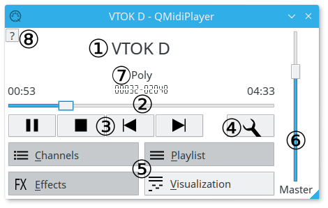

Main Window

- 1. Now playing. Right clicking here will bring up the file operation menu.
- 2. Playing control slider. The total playing time is estimated and isn't 100% accurate.
- 3. Playing control buttons.
- 4. Settings button.
- 5. Dialog toggle buttons.
- 6. Master gain slider.
- 7. Polyphone indicator.
- 8.
It's me!
- File Information.
- Render to Wave.
Return